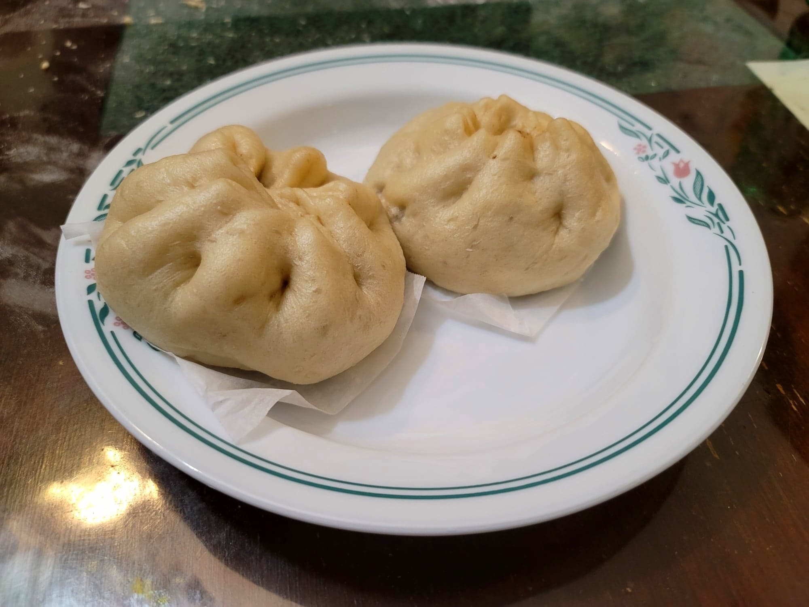

Baozi

Ingredients:
Dough:
- 5 g Dry active yeast
- 8 g Sugar
- 1 1/2 cup (355 ml) Water, warm
- 520 - 580 g Flour, or as needed
Filling:
- 1 1/2 lb Ground pork
- 3 tbsp Water
- 3 tbsp Vegetable oil
- 2 tbsp (20 g) Ginger, finely minced or grated
- 1 large Onion, diced
- 2 tbsp Shaoxing wine
- 1 tbsp Dark soy sauce
- 1 tbsp Sweet bean sauce
- 2 tbsp Ground bean sauce
- 1 tbsp Oyster sauce
- 1 tsp Sugar
- 1/2 tsp White pepper
- 2 tsp Toasted sesame oil
- 1/2 tbsp Cornstarch + 1 tbsp Water
- 3 Scallions, finely chopped
Instructions:
- Combine the warm water, yeast, and sugar. Let rest for 10-15 minutes to foam up.
- Add 520g flour and the yeast mixture to a stand mixer. Knead for about 15 minutes, adding more flour as needed. The dough should be soft, not sticky, and not too firm. Then transfer to a sealed container to rise for about 1 hour.
- While the dough proofs, prepare the filling. First, massage the water into the ground pork. Heat the oil in a wok over medium heat. Sauté the ginger and onions until the onions become translucent, about 5-7 minutes. Then add in the pork and raise the heat to high. Stir-fry until fully cooked, about 5 minutes.
- Add in the Shaoxing wine, dark soy sauce, sweet bean sauce, ground bean sauce, oyster sauce, sugar, white pepper, and sesame oil. Stir-fry until everything is well-combined. Taste and adjust seasonings if needed.
- Continue to stir-fry to let as much liquid evaporate as possible (it will still be liquidy because the oil will not evaporate). Then add in the cornstarch slurry and stir-fry for about another 30 seconds. Remove from the heat and toss in the scallions. Then let cool completely.
- To prepare a baozi, take the dough and knead it again for 1-2 minutes to deflate the dough. Then separate it into 47-50 g each pieces. Prepare some parchment paper on a large cutting board.
- Take a dough ball and flatten it with a rolling pin, rolling towards the center of the ball so that it will be thicker in the center. The center should be twice as thick as the edges. Then, while holding the flattened dough in one hand, take about 2 tbsp of filling (or to preference) and place it onto the center of the dough. With the other hand, pleat the edges all around the circle of the dough until it seals at the top. Place the bun onto the parchment paper to proof. Repeat this with the rest of the dough. Let the buns proof for 15 minutes before steaming.
- To steam, place the buns into a steamer with cold water. Bring to medium heat and set a timer for 15 minutes. After the 15 minutes, remove from the heat. Let sit for 5 minutes before removing the lid of the steamer to prevent the buns from deflating. Serve immediately.